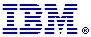
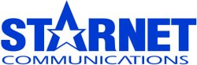
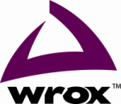
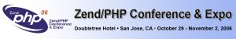
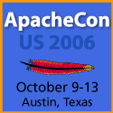
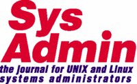
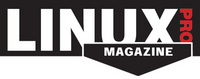

Conference Info Menu
Sponsor Us
If your company is interested in sponsoring The Fifth Annual Southern
California Linux Expo, please
contact us via telephone or e-mail.
For pricing information please contact us:
Ilan Rabinovitch
sponsorship@socallinuxexpo.org
818-442-1865 Voice
Gold Sponsors
Dell offers a broad range of product categories, including desktop computer systems, mobility products, software and peripherals, servers and networking products, enhanced services and storage products.

IBM and Linux can help your business expand beyond the limitations of proprietary vendor software and hardware and offer the enterprise computing qualities of UNIX with cost-effective hardware choices, from x86 servers to 64-bit computing and supercomputers. There are now more than 12,000 IBM Linux customer engagements worldwide, allowing customers to reduce their computing costs with solutions ranging from webserving, ERP to the world's largest supercomputers. IBM has the largest and most complete portfolio of Linux hardware, middleware and services solutions. In addition, more than 600 developers in the Linux Technology Center have been working as peers directly and successfully in various open source communities since 1999. They are proud of their many contributions that have helped accelerate Linux acceptance worldwide.
Visit us at our booth at SCALE where we will be showcasing our IBM Blue Gene, the number one supercomputer in the world, the IBM Blade Center, our Linux on Power solution, the new Cell processors, and how our System z Mainframes and Linux are being used by companies like Nationwide to bring down their overall cost of computing. To find out more about IBM's Linux support and contributions, please visit www.ibm.com/linux.
Silver Sponsors
Google's innovative search technologies connect millions of people around the world with information every day. Founded in 1998 by Stanford Ph.D. students Larry Page and Sergey Brin, Google today is a top web property in all major global markets. Google's targeted advertising program provides businesses of all sizes with measurable results, while enhancing the overall web experience for users. Google is headquartered in Silicon Valley with offices throughout the Americas, Europe, and Asia. For more information, visit www.google.com.
ClearHealth is the leading software company providing open source solutions to the healthcare market. Our award winning ClearHealth Suite offers a complete solution to manage the registration, clinical treatment and billing for practices large and small. With a growing list of prominent customers, ClearHealth Inc. has proven that Open Source can deliver feature for feature with established proprietary competitors and succeed. Our continuing research and development is bringing further innovation and openness to healthcare data in a way that benefits practices, patients and businesses alike.
Krugle Krugle is a search engine that brings the world of code to a developer's desktop. Krugle extends search beyond technical documentation and html pages by parsing code and code samples. Krugle crawls and indexes hundreds of public repositories, tens of thousands of projects and millions of code files. Scoring is based on the relevance and the context in which a particular term is found including function names and definitions, class names, and comments. Collaboration is a key component to Krugle's offering. Developers have the opportunity to annotate, save, and share search results, enriching the value of company based and open source based projects.
Servoy provides you with an easy and flexible way to integrate SOA (Service Oriented Architecture), Web Services and SaaS (Software as a Service) into your applications. You, too, can increase your revenue with new deployment models and help to "future proof" your applications. We offer special packages and promotions to help ISVs ensure a smooth transition. Ask about it today. Please visit www.servoy.com/isv/ or email yboom@servoy.com.
Redhat
 Red Hat, the world's leading open source solutions provider, is headquartered in Raleigh, NC with satellite offices spanning the globe. CIOs rank Red Hat the most valuable software vendor 3 years running in the CIO Insight Magazine Vendor Value study. Red Hat is leading Linux and open source solutions into the mainstream by making high-quality, low-cost technology accessible. Red Hat provides an operating system platform, Red Hat Enterprise Linux, along with applications, management, and middleware solutions, including JBoss Enterprise Middleware Suite. Red Hat is accelerating the shift to service-oriented architectures and enabling the next generation of web-enabled applications running on a low-cost, secure open source platform. Red Hat also offers support, training and consulting services to its customers worldwide and through top-tier partnerships. Red Hat's open source strategy offers customers a long term plan for building infrastructures that are based on and leverage open source technologies with a focus on security and ease of management. Learn more: www.redhat.com
Red Hat, the world's leading open source solutions provider, is headquartered in Raleigh, NC with satellite offices spanning the globe. CIOs rank Red Hat the most valuable software vendor 3 years running in the CIO Insight Magazine Vendor Value study. Red Hat is leading Linux and open source solutions into the mainstream by making high-quality, low-cost technology accessible. Red Hat provides an operating system platform, Red Hat Enterprise Linux, along with applications, management, and middleware solutions, including JBoss Enterprise Middleware Suite. Red Hat is accelerating the shift to service-oriented architectures and enabling the next generation of web-enabled applications running on a low-cost, secure open source platform. Red Hat also offers support, training and consulting services to its customers worldwide and through top-tier partnerships. Red Hat's open source strategy offers customers a long term plan for building infrastructures that are based on and leverage open source technologies with a focus on security and ease of management. Learn more: www.redhat.com
Trixbox - Silver Sponsor
Trixbox, formerly Asterisk@Home, is the world's largest community of users of open source, Asterisk-based voice over IP telephony platforms. The value of trixbox is that, in under 15 minutes , a non-technical user can download and install, not only Asterisk, but Linux, SugarCRM, MySQL, FreePBX and other applications. trixbox tightly integrates these open applications to work together on one physical server, providing companies with a PBX phone system and the surrounding applications they need to support their business. The trixbox community has the largest number of registered users and the most active forums for discussing and resolving open source telephony and Asterisk-based issues.
ISP Sponsor
DigiLink, Southern California's premier Internet Service Provider since 1994, servicing businesses across the United States that value performance, reliability, and a level of service that is simply not avialable from huge telephone and internet companies. DigiLink's network is designed for those customers seeking the very best in performance, featuring extremely low latency, high throughput via multiple pathways to the Internet, and expert management by seasoned engineers. Additionally our customers are supported by a customer care team that is knowledgeable and responsive. DigiLink offers DigiDial-VoIP, T1, T3, DSL, Co-Lo, Web Hosting, hardware, Anti-Spam, WAN Management, VPN, Wiring & Cabling and Network Consulting
Registration Sponsors
Coraid
 Coraid, "The Linux Storage People" designs and manufactures innovative,
networked storage appliances. Coraid developed the open ATA-over-Ethernet
(AoE) storage protocol now included in the Linux kernel. The AoE protocol is
a scalable, low cost alternative to iSCSI and Fibre Channel and is the
foundation for EtherDriveR storage products. Coraid products utilize the
cost advantages of Ethernet to provide true networked storage. Coraid's
SR1520 EtherDriveR Storage platform won the Product Excellence Award for
Best Data Backup and Storage Solution at the Linux World Expo 2005 in San
Francisco. For more information on Linux AoE storage please contact Coraid
at +1-706-548-7200, email salesinfo@coraid.com, or for more information,
please visit: www.coraid.com
Coraid, "The Linux Storage People" designs and manufactures innovative,
networked storage appliances. Coraid developed the open ATA-over-Ethernet
(AoE) storage protocol now included in the Linux kernel. The AoE protocol is
a scalable, low cost alternative to iSCSI and Fibre Channel and is the
foundation for EtherDriveR storage products. Coraid products utilize the
cost advantages of Ethernet to provide true networked storage. Coraid's
SR1520 EtherDriveR Storage platform won the Product Excellence Award for
Best Data Backup and Storage Solution at the Linux World Expo 2005 in San
Francisco. For more information on Linux AoE storage please contact Coraid
at +1-706-548-7200, email salesinfo@coraid.com, or for more information,
please visit: www.coraid.com
Ingres - The power of an enterprise strength database management system coupled with the low cost and ease of use of open source software. Ingres 2006 has evolved from one of the first commercially available relational database management systems. It has earned a reputation for being extremely dependable in supporting mission-critical applications. Ingres 2006 is the latest release in a product line stretching back more than 20 years, supporting mission critical applications for thousands of organizations.
Novell
 Novell, Inc. (Nasdaq: NOVL) delivers infrastructure software for the Open Enterprise. We are a leader in enterprise-wide operating systems based on Linux and open source and the security and systems management services required to operate mixed IT environments. We help our customers minimize cost, complexity and risk, allowing them to focus on innovation and growth. For more information, visit www.novell.com
Novell, Inc. (Nasdaq: NOVL) delivers infrastructure software for the Open Enterprise. We are a leader in enterprise-wide operating systems based on Linux and open source and the security and systems management services required to operate mixed IT environments. We help our customers minimize cost, complexity and risk, allowing them to focus on innovation and growth. For more information, visit www.novell.com
Parasoft
 Parasoft is the leading provider of innovative solutions for automating software test and analysis and for establishing software error prevention practices as an integrated part of the software development lifecycle. Parasoft products and services enable software development and IT organizations to significantly improve visibility and control over the quality, costs and schedules of their software projects through the practice of Automated Error Prevention (AEP).
Parasoft is the leading provider of innovative solutions for automating software test and analysis and for establishing software error prevention practices as an integrated part of the software development lifecycle. Parasoft products and services enable software development and IT organizations to significantly improve visibility and control over the quality, costs and schedules of their software projects through the practice of Automated Error Prevention (AEP).
 Robert Half Technology, the IT staffing and recruitment division of Robert Half International offers flexible staffing solutions to premier organizations worldwide that require technical expertise on demand. Projects range from complex e-business and web development initiatives to enterprise wide application development and technical system support. The technology professionals we deploy, on either a contract, contract-to-hire or full-time basis, include software developers, project managers, database specialists, networking and internetworking specialists, and help desk support professionals.
Robert Half Technology, the IT staffing and recruitment division of Robert Half International offers flexible staffing solutions to premier organizations worldwide that require technical expertise on demand. Projects range from complex e-business and web development initiatives to enterprise wide application development and technical system support. The technology professionals we deploy, on either a contract, contract-to-hire or full-time basis, include software developers, project managers, database specialists, networking and internetworking specialists, and help desk support professionals.
Robert Half Technology's full-service approach, extensive knowledge of the technology marketplace and experienced staff allows us to respond to our client's special needs and requirements promptly. The local Robert Half Technology office offers a wealth of career opportunities and resources. We currently have locations throughout North America, Europe and Australia including nine locations throughout Southern California. For more information, please contact us at 1.800.793.5533 or www.roberthalftechnology.com
 Sun
Sun
A singular vision -- "The Network Is The Computer" (TM) -- guides Sun in the development of technologies that power the world's most important markets. Sun's philosophy of sharing innovation and building communities is at the forefront of the next wave of computing: the Participation Age. Sun can be found in more than 100 countries and on the web at sun.com.
 Transitive Corporation is a leader in providing solutions that allow the transportability of software applications across hardware platforms. Transitive's QuickTransit solution allows applications created for one processor and operating system to run on another without any source code or binary changes. QuickTransit allows data center managers to transport legacy enterprise applications quickly and easily from outdated, proprietary hardware to modern, industry-standard platforms without incurring the costs, delays or disruptions of porting projects. QuickTransit also facilitates computer makers' migrations to new hardware platforms, accelerates software developers' time-to-market in supporting multiple hardware platforms; and makes a broader range of software available for hardware platforms. QuickTransit technology provides the engine for Apple's Rosetta translation software and is currently shipping on all of Apple's Intel-based computers. Transitive Corporation is located in Los Gatos, California with a research and development team in Manchester, UK. For more information, please visit Transitive's Web site at www.transitive.com.
Transitive Corporation is a leader in providing solutions that allow the transportability of software applications across hardware platforms. Transitive's QuickTransit solution allows applications created for one processor and operating system to run on another without any source code or binary changes. QuickTransit allows data center managers to transport legacy enterprise applications quickly and easily from outdated, proprietary hardware to modern, industry-standard platforms without incurring the costs, delays or disruptions of porting projects. QuickTransit also facilitates computer makers' migrations to new hardware platforms, accelerates software developers' time-to-market in supporting multiple hardware platforms; and makes a broader range of software available for hardware platforms. QuickTransit technology provides the engine for Apple's Rosetta translation software and is currently shipping on all of Apple's Intel-based computers. Transitive Corporation is located in Los Gatos, California with a research and development team in Manchester, UK. For more information, please visit Transitive's Web site at www.transitive.com.
Zenoss
Recently named one of the "Top 10 Open Source Companies to Watch" by Network
World, Zenoss is an open source network and systems management software
company based in Annapolis, MD. Zenoss provides the most complete open
source monitoring platform as a lower cost and easier-to-deploy alternative
to traditional proprietary solutions. For more information, please visit
www.zenoss.com
E-mail Garden Sponsor
 Shuttle Computers is the manufacturer of the small, cube shaped personal computer 1/3rd the size of a typical desktop PC. Shuttle products are engineered with industry-changing designs for performance, noise reduction and Integrated Cooling Engine technology. This successful SFF (small form factor) desktop computer continues to define the segment with our HYPERLINK XPC products. Shuttle XPC Desktop computers shatters the myth that "bigger is better.
Shuttle Computers is the manufacturer of the small, cube shaped personal computer 1/3rd the size of a typical desktop PC. Shuttle products are engineered with industry-changing designs for performance, noise reduction and Integrated Cooling Engine technology. This successful SFF (small form factor) desktop computer continues to define the segment with our HYPERLINK XPC products. Shuttle XPC Desktop computers shatters the myth that "bigger is better.
Speaker Track Sponsors
Aberdeen LLC
 , the Custom Server Solution Provider, designed the award
winning Stonehaven, Ultimate Linux Server declared by Linux Journal.
Among the customizable AMD and Intel servers, Aberdeen also provides
innovative storage solutions, the AberNAS Network Attached Storage
appliances and the XDAS scalable RAID storage devices. Continuously
praised for delivering superior performance with the best cost per TB
ratio in the industry, Aberdeen offers an unrivaled 5-Year warranty.
, the Custom Server Solution Provider, designed the award
winning Stonehaven, Ultimate Linux Server declared by Linux Journal.
Among the customizable AMD and Intel servers, Aberdeen also provides
innovative storage solutions, the AberNAS Network Attached Storage
appliances and the XDAS scalable RAID storage devices. Continuously
praised for delivering superior performance with the best cost per TB
ratio in the industry, Aberdeen offers an unrivaled 5-Year warranty.
Basic Sponsors
Centrify
Centrify DirectControl delivers secure access control and centralized identity management by seamlessly integrating UNIX, Linux, Mac, databases, J2EE and web platforms with Microsoft Active Directory. With DirectControl, organizations can improve IT efficiency, better comply with regulatory requirements, and move toward a more secure, connected infrastructure for their heterogeneous computing environment. DirectControl is non-intrusive, easy to deploy and manage, and is the only solution that enables fine-grained access control, reporting, and auditing through its unique Zone technology.
ImageStream
ImageStream Internet Solutions, Inc. is the world's leading supplier of Linux routers and WAN cards. ImageStream has achieved industry leading price and performance for high-density T1/E1, DS3/E3, OC3, and OC12 routing applications. ImageStream is also a leading OEM supplier of single board computers, communications cards, and Linux software for networking, telephony, satellite, and avionics applications. Come inside and learn how ImageStream is using commodity off-the-shelf components and the Linux operating system to drive the Router Revolution.
Silicon Mechanics
Silicon Mechanics is a leading integrator of rack-optimized servers, storage, and high-performance computing products. We have one of the most comprehensive product offerings available in the industry, easily configured on our unique web site, www.siliconmechanics.com. Our dedicated team of experts stands behind every server we build.
Starnet Communications

StarNet Communications Corporation was founded in 1989 and incorporated in 1990. Its corporate mission is to create and market powerful, yet affordable PC-X server products for corporate, education and government markets. StarNet Communications has been a leading provider to X server emulation solutions for Windows PCs connecting At Linux and Unix hosts.
Raffle Sponsors
Wrox

Wrox Press, established in 1992 to publish books for computer programmers, is driven by the Programmer to Programmer philosophy. Wrox books are written by programmers for programmers, and the Wrox brand means authoritative solutions to real-world programming problems. Wrox's unique author-editorial process delivers the best and most useful information you need in the timeliest manner.
Media Sponsors
Southern California MacFair
The Southern California MacFair 2006 is centrally located for all southern California residents at Cerritos College - just a short drive from all major California freeways. Hands-on workshops and classes are scheduled Friday and Saturday, November 3-4. The vendor expo and presentation seminars are Saturday, November 4th from 10a-5:30p.
ETel Conference 2007
In 2006, ETel was a ground breaking conference. We took a risk and broke from the tried, tired old format of most telco events--thinly disguised trade shows to sell boxes--and created a revitalized forum for early stage innovators, alpha geeks, and telco researchers to meet, debate and share ideas with the people who may actually bring them into the world. It was a heady atmosphere. Our aim now is to take that spirit of imagination, discovery, and action into ETel 2007 and beyond.
TechTracker
 TechTracker Media helps tech companies reach a highly influential group of IT users through advertising and sponsorships on leading tech sites. Publications include all O'Reilly Network (OReillyNet.com, LinuxDevCenter, OnJava.com, Perl.com...), BetaNews.com, Computing.net, LinuxQuestions.org, VersionTracker.com and TechSpot.com.
TechTracker Media helps tech companies reach a highly influential group of IT users through advertising and sponsorships on leading tech sites. Publications include all O'Reilly Network (OReillyNet.com, LinuxDevCenter, OnJava.com, Perl.com...), BetaNews.com, Computing.net, LinuxQuestions.org, VersionTracker.com and TechSpot.com.
Zend/PHP Conference & Expo

The upcoming Zend/PHP Conference provides an excellent opportunity for press and analysts to learn the latest on the breadth and depth of Zend and the open source movement. With expected participation from a wide range of partners and customers, from heavy PHP users, such as industry leaders like IBM and Oracle, the conference will showcase the wide range of PHP-based implementations.
ApacheCon US 2006

The official conference of the Apache Software Foundation, ApacheCon draws ASF Members, innovators, developers, vendors, and users to experience the future of Open Source development. Meet, mingle, and exchange ideas with like-minded participants on groundbreaking technologies and emerging industry trends, through informal networking, peer discussions, birds-of-a-feather sessions, and entertaining social events.
Methods & Tools
Methods & Tools is a free magazine with PDF and text issues that provide practical knowledge and information on all topics of software development and software engineering: UML, Agile Methodologies (eXtreme Programming, Scrum, TDD, FDD,..), Software Testing, Software Configuration Management, Database Modeling, Java, .NET, RUP, Software Project Planning and Management, Test Automation, Programming, Software Analysis and Design, Quality Assurance, Software Process Assessment and Improvement, Software Development Tools, Risk Management, Refactoring, IT News, etc.
HPCwire
HPCwire is the leading source for global news and information covering
the ecosystem of High Productivity Computing. Devoted primarily to
ongoing developments across the entire spectrum of computationally
intensive hardware, software, and integrated systems technology, HPCwire
also covers related business, corporate, economic, and governmental news
in a timely and easily accessible Internet format. For your FREE
subscription to HPCwire go to www.hpcwire.com/freeform.html
Sys Admin Magazine

Sys Admin magazine delivers information for systems and network administrators whose duties include administration of UNIX systems. Every month we'll give you the information you need to handle the daily challenges of systems administration efficiently and effectively. You'll find ways to improve the performance or extend the capabilities of your system. Coverage includes: integrating heterogeneous systems-UNIX, NT, W4W, NetWare; security; backup; crash recovery; system analysis and monitoring; and system automation.
LXer
LXer is a fully independent news and opinion site, established in January 2004, by Linux veteran Dave Whitinger, a well-known personality in the free and open source software community.
LXer is one of the fastest growing Linux news and opinion sites on the globe. People turn to LXer for its readable, often updated news feed and comments. Over 400,000 unique users from 165 countries visit LXer each month, and LXer is syndicated by Google. CIOs, CTOs, government officials, as well as programmers, system administrators and end users make up our very active community.
DebCentral
DebCentral is an online community for Debian GNU/Linux based Linux distributions. That includes news, reviews, tutorials, forums, etc.
Usenix Association
 USENIX is the Advanced Computing Systems Association. For 30 years, it has been the leading community for engineers, system administrators, scientists, and technicians working on the cutting edge of the computing world. USENIX conferences are the essential meeting ground for the presentation and discussion of technical advances in all aspects of computing systems. Join us June 17-22, 2007, in Santa Clara, CA, for the 2007 USENIX Annual Technical Conference.
For more information about the USENIX Association, see http://www.usenix.org/
USENIX is the Advanced Computing Systems Association. For 30 years, it has been the leading community for engineers, system administrators, scientists, and technicians working on the cutting edge of the computing world. USENIX conferences are the essential meeting ground for the presentation and discussion of technical advances in all aspects of computing systems. Join us June 17-22, 2007, in Santa Clara, CA, for the 2007 USENIX Annual Technical Conference.
For more information about the USENIX Association, see http://www.usenix.org/
Linux Pro Magazine

In Linux Pro Magazine, you'll find the tools, tutorials, reviews, and concrete technical discussions you'll need to unlock the secrets of Linux -- and not just from the server side. Linux Pro Magazine brings you solutions for real users with Linux on real desktops.
Each issue comes with a full Linux distribution or other valuable software collection on a bonus DVD. Our DVDs include full versions of major distributions such as Suse, Mandriva, Fedora, Ubuntu, and Debian.
Linuxquestions.org
LinuxQuestions.org is a free, friendly and active Linux Community with over 150,000 members and over 1,350,000 posts. Founded in 2000 LQ offers forums, reviews, a Linux hardware compatibility list, a collaboratively built Linux knowledge base in wiki format, Linux tutorials, a free Linux download site and more. LQ has forums for everything from Linux Newbies to Linux in the Enterprise and has over 20 officially recognized Linux distribution forums.